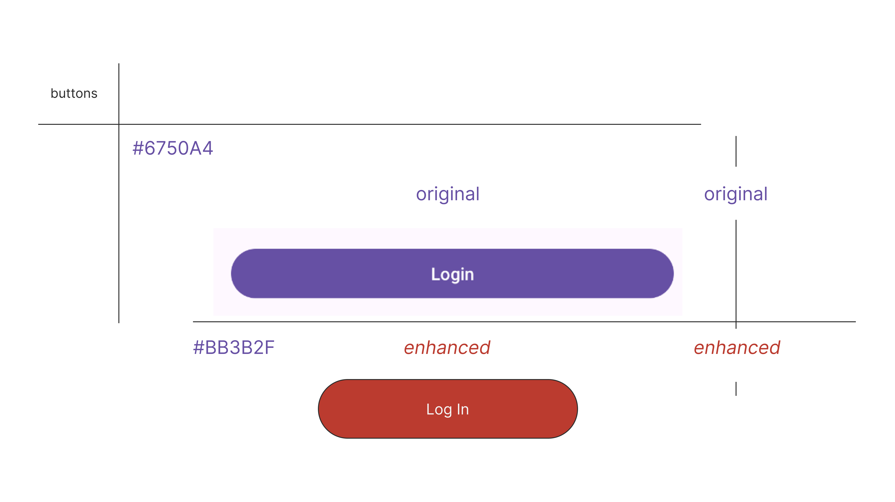
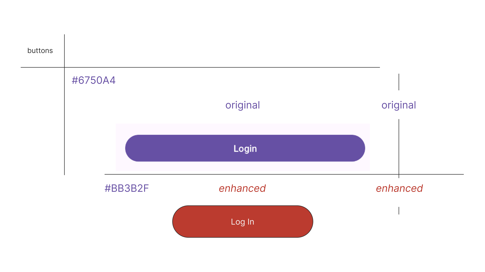

Project Highlights
EvenTrack
EvenTrack is a mobile event management app built using Android Studio and Firebase, designed to help users stay organized through intelligent planning, reminders, and real-time notifications. Initially created as a class project, it has since grown into a polished prototype with expanded functionality and cleaner UX.
- üì± Android Frontend: Built using Java and XML layouts in Android Studio for native performance.
- üî• Firebase Backend: Integrates real-time database and cloud messaging for syncing and alerting users instantly.
- üí¨ SMS Alerts: Sends SMS notifications to users for scheduled events and reminders.
- üé® Custom UI Design: Redesigned with visual hierarchy, cohesive color schemes, and intuitive navigation.
Original Prototype
The original EvenTrack prototype was developed early in my computer science journey. It featured a basic UI that allowed users to input an event title, time, date, and a personal note. Despite its simplicity, the project laid the foundation for a more robust solution and helped me better understand Android components and activity lifecycle.
As my development skills matured, I incrementally introduced more advanced features such as recurring events, category tagging, and an improved visual layout to better align with user-centered design principles.

View the full C++ source code on GitHub.
Enhanced Prototype

The latest prototype includes improved performance, responsive layout adjustments, and a fully restructured UI/UX flow. Through Firebase integration, users now enjoy real-time syncing of event data, while the addition of SMS alerts brings timely reminders to their fingertips.
A cohesive visual design system was introduced, using purposeful color schemes and iconography to improve the application's accessibility and usability. Buttons and typography were optimized for mobile responsiveness and visual clarity.
 

Future Enhancements
My long-term vision for EvenTrack includes integration with Google Calendar and Outlook, voice command features, and an AI-powered suggestion engine that adapts to user habits and recommends optimal event times and reminders. Additional enhancements may include collaborative event planning, task tracking, and user authentication for multi-device access.

Course Navigator Pro
Course Navigator Pro is the enhanced, full-stack evolution of the original ABC University advising tool. Developed for my CS-499 Computer Science Capstone, this version integrates modern data structures and backend technologies to deliver a scalable, efficient, and user-friendly academic advising experience.
- üå≥ AVL Tree Implementation: Replaced the original BST with a self-balancing AVL Tree to maintain O(log n) time for all operations, even with large datasets.
- ü߆ Java Rewrite: Refactored the entire application into a modular Java-based system, applying object-oriented programming principles.
- üóÉÔ∏è MongoDB Integration: Integrated a NoSQL backend for persistent, scalable course and user data management.
- üõ†Ô∏è Capstone Focus: Delivered as a capstone artifact with full pseudocode, runtime analysis, and future deployment planning.

Original Code (C++): ABC University
ABC University is a C++ console application created for an academic project. It acts as a simple advising system where users can load course data, print a sorted course list, and search for individual course details. The system utilizes a Binary Search Tree (BST) to optimize data storage and retrieval.
- üì• Load Course Data: Parses CSV files into structured course records and inserts them into the BST.
- üìã Sorted Course List: Uses in-order traversal to print all courses in alphanumeric order.
- üîç Search Details: Allows users to search by course number and view its title and prerequisites.
- ü߆ Efficient Retrieval: BST enables fast lookups with O(log n) time in balanced conditions.
- üß© Modular Structure: Built using well-defined structs and classes for Course, Node, and BST.

View the full C++ source code on GitHub.
Enhanced Code (Java + MongoDB)
View the full C++ source code on GitHub.
One of the most significant upgrades was the implementation of an AVL tree, a self-balancing binary search tree that ensures optimal time complexity for insertions, deletions, and lookups by maintaining strict height balance. Combined with a MongoDB database, this enhancement enabled the application to store and query course data efficiently in real-time, making the system suitable for academic institutions managing hundreds of courses.
Future Enhancements
Future iterations of Course Navigator Pro may include a graphical user interface (GUI) or web front-end, user authentication, integration with REST APIs, and real-time data syncing across devices. These improvements will support broader deployment in advising departments and enhance usability for students and administrators.